Plotting means and error bars (ggplot2)
This page was recently updated to reflect changes in the new version of ggplot2, 0.9.3. See Installing and using packages to make sure you have the latest version of ggplot2.
Problem
You want to plot means and error bars for a dataset.
Solution
To make graphs with ggplot2, the data must be in a data frame, and in "long" (as opposed to wide) format. If your data needs to be restructured, see this page for more information.
Sample data
The examples below will the ToothGrowth dataset. Note that dose is a numeric column here; in some situations it may be useful to convert it to a factor.
df <- ToothGrowth # len supp dose # 4.2 VC 0.5 # 11.5 VC 0.5 # ... # 29.4 OJ 2 # 23.0 OJ 2 library(ggplot2)
First, it is necessary to summarize the data. This can be done in a number of ways, as described on this page. In this case, we'll use the summarySE() function defined on that page, and also at the bottom of this page. (The code for the summarySE function must be entered before it is called here).
# summarySE provides the standard deviation, standard error of the mean, and a (default 95%) confidence interval dfc <- summarySE(df, measurevar="len", groupvars=c("supp","dose")) # supp dose N len sd se ci # OJ 0.5 10 13.23 4.459709 1.4102837 3.190283 # OJ 1.0 10 22.70 3.910953 1.2367520 2.797727 # OJ 2.0 10 26.06 2.655058 0.8396031 1.899314 # VC 0.5 10 7.98 2.746634 0.8685620 1.964824 # VC 1.0 10 16.77 2.515309 0.7954104 1.799343 # VC 2.0 10 26.14 4.797731 1.5171757 3.432090
Line graphs
After the data is summarized, we can make the graph. These are basic line and point graph with error bars representing either the standard error of the mean, or 95% confidence interval.
# Standard error of the mean ggplot(dfc, aes(x=dose, y=len, colour=supp)) + geom_errorbar(aes(ymin=len-se, ymax=len+se), width=.1) + geom_line() + geom_point() # The errorbars overlapped, so use position_dodge to move them horizontally pd <- position_dodge(.1) # move them .05 to the left and right ggplot(dfc, aes(x=dose, y=len, colour=supp)) + geom_errorbar(aes(ymin=len-se, ymax=len+se), width=.1, position=pd) + geom_line(position=pd) + geom_point(position=pd) # Use 95% confidence interval instead of SEM ggplot(dfc, aes(x=dose, y=len, colour=supp)) + geom_errorbar(aes(ymin=len-ci, ymax=len+ci), width=.1, position=pd) + geom_line(position=pd) + geom_point(position=pd) # Black error bars - notice the mapping of 'group=supp' -- without it, the error # bars won't be dodged! ggplot(dfc, aes(x=dose, y=len, colour=supp, group=supp)) + geom_errorbar(aes(ymin=len-ci, ymax=len+ci), colour="black", width=.1, position=pd) + geom_line(position=pd) + geom_point(position=pd, size=3)
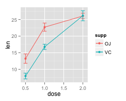 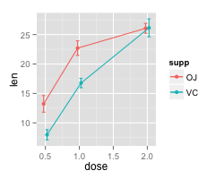 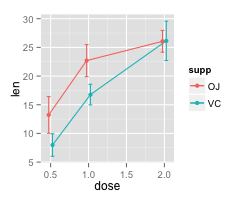 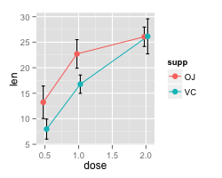
A finished graph with error bars representing the standard error of the mean might look like this. The points are drawn last so that the white fill goes on top of the lines and error bars.
ggplot(dfc, aes(x=dose, y=len, colour=supp, group=supp)) + geom_errorbar(aes(ymin=len-se, ymax=len+se), colour="black", width=.1, position=pd) + geom_line(position=pd) + geom_point(position=pd, size=3, shape=21, fill="white") + # 21 is filled circle xlab("Dose (mg)") + ylab("Tooth length") + scale_colour_hue(name="Supplement type", # Legend label, use darker colors breaks=c("OJ", "VC"), labels=c("Orange juice", "Ascorbic acid"), l=40) + # Use darker colors, lightness=40 ggtitle("The Effect of Vitamin C on\nTooth Growth in Guinea Pigs") + scale_y_continuous(limits=c(0, max(dfc$len + dfc$se)), # Set y range breaks=0:20*4) + # Set tick every 4 theme_bw() + theme(legend.justification=c(1,0), legend.position=c(1,0)) # Position legend in bottom right
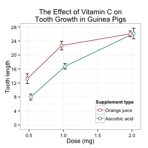
Bar graphs
The procedure is similar for bar graphs. Note that dfc$size must be a factor. If it is a numeric vector, then it will not work.
# Use dose as a factor rather than numeric dfc2 <- dfc dfc2$dose <- factor(dfc2$dose) # Error bars represent standard error of the mean ggplot(dfc2, aes(x=dose, y=len, fill=supp)) + geom_bar(position=position_dodge(), stat="identity") + geom_errorbar(aes(ymin=len-se, ymax=len+se), width=.2, # Width of the error bars position=position_dodge(.9)) # Use 95% confidence intervals instead of SEM ggplot(dfc2, aes(x=dose, y=len, fill=supp)) + geom_bar(position=position_dodge(), stat="identity") + geom_errorbar(aes(ymin=len-ci, ymax=len+ci), width=.2, # Width of the error bars position=position_dodge(.9))
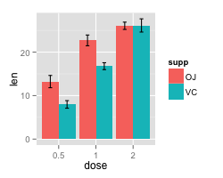 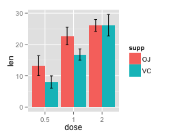
A finished graph might look like this.
ggplot(dfc2, aes(x=dose, y=len, fill=supp)) + geom_bar(position=position_dodge(), stat="identity", colour="black", # Use black outlines, size=.3) + # Thinner lines geom_errorbar(aes(ymin=len-se, ymax=len+se), size=.3, # Thinner lines width=.2, position=position_dodge(.9)) + xlab("Dose (mg)") + ylab("Tooth length") + scale_fill_hue(name="Supplement type", # Legend label, use darker colors breaks=c("OJ", "VC"), labels=c("Orange juice", "Ascorbic acid")) + ggtitle("The Effect of Vitamin C on\nTooth Growth in Guinea Pigs") + scale_y_continuous(breaks=0:20*4) + theme_bw()
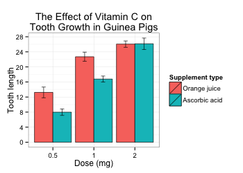
Error bars for within-subjects variables
When all variables are between-subjects, it is straightforward to plot standard error or confidence intervals. However, when there are within-subjects variables (repeated measures), plotting the standard error or regular confidence intervals may be misleading for making inferences about differences between conditions.
The method below is from Morey (2008), which is a correction to Cousineau (2005), which in turn is meant to be a simpler method of that in Loftus and Masson (1994). See these papers for a more detailed treatment of the issues involved in error bars with within-subjects variables.
One within-subjects variable
Here is a data set (from Morey 2008) with one within-subjects variable: pre/post-test.
dfw <- read.table(header=T, text=' subject pretest posttest 1 59.4 64.5 2 46.4 52.4 3 46.0 49.7 4 49.0 48.7 5 32.5 37.4 6 45.2 49.5 7 60.3 59.9 8 54.3 54.1 9 45.4 49.6 10 38.9 48.5 ') # Treat subject ID as a factor dfw$subject <- factor(dfw$subject)
The first step is to convert it to long format. See this page for more information about the conversion.
# Convert to long format library(reshape2) dfw.long <- melt(dfw, id.vars = "subject", measure.vars = c("pretest","posttest"), variable.name = "condition") # subject condition value # 1 pretest 59.4 # 2 pretest 46.4 # 3 pretest 46.0 # 4 pretest 49.0 # 5 pretest 32.5 # 6 pretest 45.2 # 7 pretest 60.3 # 8 pretest 54.3 # 9 pretest 45.4 # 10 pretest 38.9 # 1 posttest 64.5 # 2 posttest 52.4 # 3 posttest 49.7 # 4 posttest 48.7 # 5 posttest 37.4 # 6 posttest 49.5 # 7 posttest 59.9 # 8 posttest 54.1 # 9 posttest 49.6 # 10 posttest 48.5
Collapse the data using summarySEwithin (defined at the bottom of this page; both of the helper functions below must be entered before the function is called here).
dfwc <- summarySEwithin(dfw.long, measurevar="value", withinvars="condition", idvar="subject", na.rm=FALSE, conf.interval=.95) # condition N value value_norm sd se ci # posttest 10 51.43 51.43 2.262361 0.7154214 1.618396 # pretest 10 47.74 47.74 2.262361 0.7154214 1.618396 library(ggplot2) # Make the graph with the 95% confidence interval ggplot(dfwc, aes(x=condition, y=value, group=1)) + geom_line() + geom_errorbar(width=.1, aes(ymin=value-ci, ymax=value+ci)) + geom_point(shape=21, size=3, fill="white") + ylim(40,60)
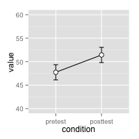
The value and value_norm columns represent the un-normed and normed means. See the section below on normed means for more information.
Understanding within-subjects error bars
This section explains how the within-subjects error bar values are calculated. The steps here are for explanation purposes only; they are not necessary for making the error bars.
The graph of individual data shows that there is a consistent trend for the within-subjects variable condition, but this would not necessarily be revealed by taking the regular standard errors (or confidence intervals) for each group. The method in Morey (2008) and Cousineau (2005) essentially normalizes the data to remove the between-subject variability and calculates the variance from this normalized data.
# Use a consistent y range ymax <- max(dfw.long$value) ymin <- min(dfw.long$value) # Plot the individuals ggplot(dfw.long, aes(x=condition, y=value, colour=subject, group=subject)) + geom_line() + geom_point(shape=21, fill="white") + ylim(ymin,ymax) # Create the normed version of the data dfwNorm.long <- normDataWithin(data=dfw.long, idvar="subject", measurevar="value") # Plot the normed individuals ggplot(dfwNorm.long, aes(x=condition, y=value_norm, colour=subject, group=subject)) + geom_line() + geom_point(shape=21, fill="white") + ylim(ymin,ymax)
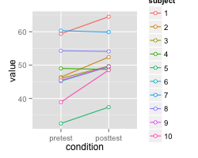 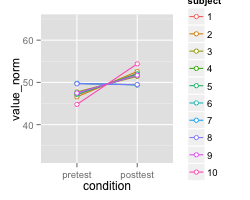
The differences in the error bars for the regular (between-subject) method and the within-subject method are shown here. The regular error bars are in red, and the within-subject error bars are in black.
# Instead of summarySEwithin, use summarySE, which treats condition as though it were a between-subjects variable dfwc.between <- summarySE(data=dfw.long, measurevar="value", groupvars="condition", na.rm=FALSE, conf.interval=.95) # condition N value sd se ci # pretest 10 47.74 8.598992 2.719240 6.151348 # posttest 10 51.43 7.253972 2.293907 5.189179 # Show the between-S CI's in red, and the within-S CI's in black ggplot(dfwc.between, aes(x=condition, y=value, group=1)) + geom_line() + geom_errorbar(width=.1, aes(ymin=value-ci, ymax=value+ci), colour="red") + geom_errorbar(width=.1, aes(ymin=value-ci, ymax=value+ci), data=dfwc) + geom_point(shape=21, size=3, fill="white") + ylim(ymin,ymax)
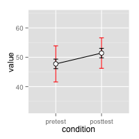
Two within-subjects variables
If there is more than one within-subjects variable, the same function, summarySEwithin, can be used. This data set is taken from Hays (1994), and used for making this type of within-subject error bar in Rouder and Morey (2005).
data <- read.table(header=T, text=' Subject RoundMono SquareMono RoundColor SquareColor 1 41 40 41 37 2 57 56 56 53 3 52 53 53 50 4 49 47 47 47 5 47 48 48 47 6 37 34 35 36 7 47 50 47 46 8 41 40 38 40 9 48 47 49 45 10 37 35 36 35 11 32 31 31 33 12 47 42 42 42 ')
The data must first be converted to long format. In this case, the column names indicate two variables, shape (round/square) and color scheme (monochromatic/colored).
# Convert it to long format library(reshape2) data.long <- melt(data=data, id.var="Subject", measure.vars=c("RoundMono", "SquareMono", "RoundColor", "SquareColor"), variable.name="Condition") names(data.long)[names(data.long)=="value"] <- "Time" # Split Condition column into Shape and ColorScheme data.long$Shape <- NA data.long$Shape[grepl("^Round", data.long$Condition)] <- "Round" data.long$Shape[grepl("^Square", data.long$Condition)] <- "Square" data.long$Shape <- factor(data.long$Shape) data.long$ColorScheme <- NA data.long$ColorScheme[grepl("Mono$", data.long$Condition)] <- "Monochromatic" data.long$ColorScheme[grepl("Color$", data.long$Condition)] <- "Colored" data.long$ColorScheme <- factor(data.long$ColorScheme, levels=c("Monochromatic","Colored")) # Remove the Condition column now data.long$Condition <- NULL data.long # Subject Time Shape ColorScheme # 1 41 Round Monochromatic # 2 57 Round Monochromatic # 3 52 Round Monochromatic # ... # 1 37 Square Colored # 2 53 Square Colored # ... # 11 33 Square Colored # 12 42 Square Colored
Now it can be summarized and graphed.
datac <- summarySEwithin(data.long, measurevar="Time", withinvars=c("Shape","ColorScheme"), idvar="Subject") # Shape ColorScheme N Time Time_norm sd se ci # Round Colored 12 43.58333 43.58333 1.212311 0.3499639 0.7702654 # Round Monochromatic 12 44.58333 44.58333 1.331438 0.3843531 0.8459554 # Square Colored 12 42.58333 42.58333 1.461630 0.4219364 0.9286757 # Square Monochromatic 12 43.58333 43.58333 1.261312 0.3641095 0.8013997 library(ggplot2) ggplot(datac, aes(x=Shape, y=Time, fill=ColorScheme)) + geom_bar(position=position_dodge(.9), colour="black", stat="identity") + geom_errorbar(position=position_dodge(.9), width=.25, aes(ymin=Time-ci, ymax=Time+ci)) + coord_cartesian(ylim=c(40,46)) + scale_fill_manual(values=c("#CCCCCC","#FFFFFF")) + scale_y_continuous(breaks=seq(1:100)) + theme_bw() + geom_hline(yintercept=38)
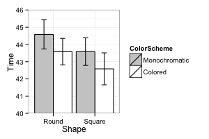
Note about normed means
The summarySEWithin function returns both normed and un-normed means. The un-normed means are simply the mean of each group. The normed means are calculated so that means of each between-subject group are the same. These values can diverge when there are between-subject variables.
For example:
dat <- read.table(header=TRUE, text=' id trial gender dv A 0 male 2 A 1 male 4 B 0 male 6 B 1 male 8 C 0 female 22 C 1 female 24 D 0 female 26 D 1 female 28 ') # normed and un-normed means are different summarySEwithin(dat, measurevar="dv", withinvars="trial", betweenvars="gender", idvar="id") # gender trial N dv dv_norm sd se ci # female 0 2 24 14 0 0 0 # female 1 2 26 16 0 0 0 # male 0 2 4 14 0 0 0 # male 1 2 6 16 0 0 0
Helper functions
The summarySE function is also defined on this page. If you only are working with between-subjects variables, that is the only function you will need in your code. If you have within-subjects variables and want to adjust the error bars so that inter-subject variability is removed as in Loftus and Masson (1994), then the other two functions, normDataWithin and summarySEwithin must also be added to your code; summarySEwithin will then be the function that you call.
## Summarizes data. ## Gives count, mean, standard deviation, standard error of the mean, and confidence interval (default 95%). ## data: a data frame. ## measurevar: the name of a column that contains the variable to be summariezed ## groupvars: a vector containing names of columns that contain grouping variables ## na.rm: a boolean that indicates whether to ignore NA's ## conf.interval: the percent range of the confidence interval (default is 95%) summarySE <- function(data=NULL, measurevar, groupvars=NULL, na.rm=FALSE, conf.interval=.95, .drop=TRUE) { require(plyr) # New version of length which can handle NA's: if na.rm==T, don't count them length2 <- function (x, na.rm=FALSE) { if (na.rm) sum(!is.na(x)) else length(x) } # This does the summary. For each group's data frame, return a vector with # N, mean, and sd datac <- ddply(data, groupvars, .drop=.drop, .fun = function(xx, col) { c(N = length2(xx[[col]], na.rm=na.rm), mean = mean (xx[[col]], na.rm=na.rm), sd = sd (xx[[col]], na.rm=na.rm) ) }, measurevar ) # Rename the "mean" column datac <- rename(datac, c("mean" = measurevar)) datac$se <- datac$sd / sqrt(datac$N) # Calculate standard error of the mean # Confidence interval multiplier for standard error # Calculate t-statistic for confidence interval: # e.g., if conf.interval is .95, use .975 (above/below), and use df=N-1 ciMult <- qt(conf.interval/2 + .5, datac$N-1) datac$ci <- datac$se * ciMult return(datac) }
## Norms the data within specified groups in a data frame; it normalizes each ## subject (identified by idvar) so that they have the same mean, within each group ## specified by betweenvars. ## data: a data frame. ## idvar: the name of a column that identifies each subject (or matched subjects) ## measurevar: the name of a column that contains the variable to be summariezed ## betweenvars: a vector containing names of columns that are between-subjects variables ## na.rm: a boolean that indicates whether to ignore NA's normDataWithin <- function(data=NULL, idvar, measurevar, betweenvars=NULL, na.rm=FALSE, .drop=TRUE) { require(plyr) # Measure var on left, idvar + between vars on right of formula. data.subjMean <- ddply(data, c(idvar, betweenvars), .drop=.drop, .fun = function(xx, col, na.rm) { c(subjMean = mean(xx[,col], na.rm=na.rm)) }, measurevar, na.rm ) # Put the subject means with original data data <- merge(data, data.subjMean) # Get the normalized data in a new column measureNormedVar <- paste(measurevar, "_norm", sep="") data[,measureNormedVar] <- data[,measurevar] - data[,"subjMean"] + mean(data[,measurevar], na.rm=na.rm) # Remove this subject mean column data$subjMean <- NULL return(data) }
## Summarizes data, handling within-subjects variables by removing inter-subject variability. ## It will still work if there are no within-S variables. ## Gives count, un-normed mean, normed mean (with same between-group mean), ## standard deviation, standard error of the mean, and confidence interval. ## If there are within-subject variables, calculate adjusted values using method from Morey (2008). ## data: a data frame. ## measurevar: the name of a column that contains the variable to be summariezed ## betweenvars: a vector containing names of columns that are between-subjects variables ## withinvars: a vector containing names of columns that are within-subjects variables ## idvar: the name of a column that identifies each subject (or matched subjects) ## na.rm: a boolean that indicates whether to ignore NA's ## conf.interval: the percent range of the confidence interval (default is 95%) summarySEwithin <- function(data=NULL, measurevar, betweenvars=NULL, withinvars=NULL, idvar=NULL, na.rm=FALSE, conf.interval=.95, .drop=TRUE) { # Ensure that the betweenvars and withinvars are factors factorvars <- vapply(data[, c(betweenvars, withinvars), drop=FALSE], FUN=is.factor, FUN.VALUE=logical(1)) if (!all(factorvars)) { nonfactorvars <- names(factorvars)[!factorvars] message("Automatically converting the following non-factors to factors: ", paste(nonfactorvars, collapse = ", ")) data[nonfactorvars] <- lapply(data[nonfactorvars], factor) } # Get the means from the un-normed data datac <- summarySE(data, measurevar, groupvars=c(betweenvars, withinvars), na.rm=na.rm, conf.interval=conf.interval, .drop=.drop) # Drop all the unused columns (these will be calculated with normed data) datac$sd <- NULL datac$se <- NULL datac$ci <- NULL # Norm each subject's data ndata <- normDataWithin(data, idvar, measurevar, betweenvars, na.rm, .drop=.drop) # This is the name of the new column measurevar_n <- paste(measurevar, "_norm", sep="") # Collapse the normed data - now we can treat between and within vars the same ndatac <- summarySE(ndata, measurevar_n, groupvars=c(betweenvars, withinvars), na.rm=na.rm, conf.interval=conf.interval, .drop=.drop) # Apply correction from Morey (2008) to the standard error and confidence interval # Get the product of the number of conditions of within-S variables nWithinGroups <- prod(vapply(ndatac[,withinvars, drop=FALSE], FUN=nlevels, FUN.VALUE=numeric(1))) correctionFactor <- sqrt( nWithinGroups / (nWithinGroups-1) ) # Apply the correction factor ndatac$sd <- ndatac$sd * correctionFactor ndatac$se <- ndatac$se * correctionFactor ndatac$ci <- ndatac$ci * correctionFactor # Combine the un-normed means with the normed results merge(datac, ndatac) }